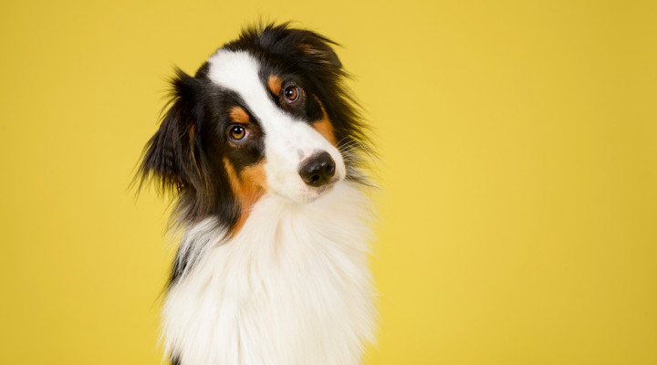

|  | Соба́ка (лат. Canis lupus familiaris) — домашнее животное, одно из наиболее популярных (наряду с кошкой) животных-компаньонов. Первоначально домашняя собака была выделена в отдельный биологический вид (лат. Canis familiaris) Линнеем в 1758 году, в 1993 году реклассифицирована Смитсоновским институтом и Американской ассоциацией териологов в подвид волка (Canis lupus)[2]. В русскоязычных письменных источниках слово «собака» в значении соответствующего животного встречается по крайней мере с 1475 года (начиная с грамоты князя Андрея Васильевича Меньшого Кириллову монастырю)[3][4]. |